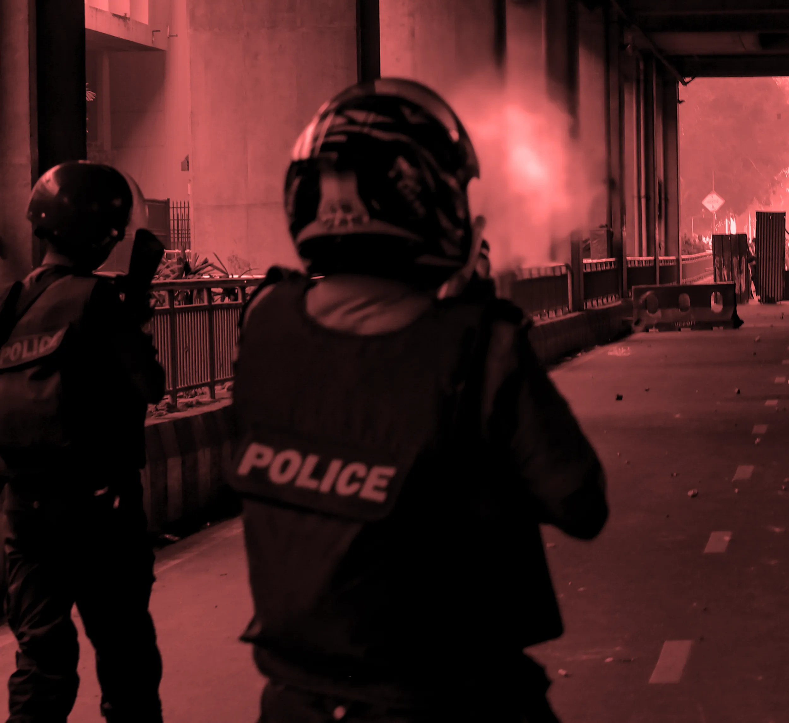
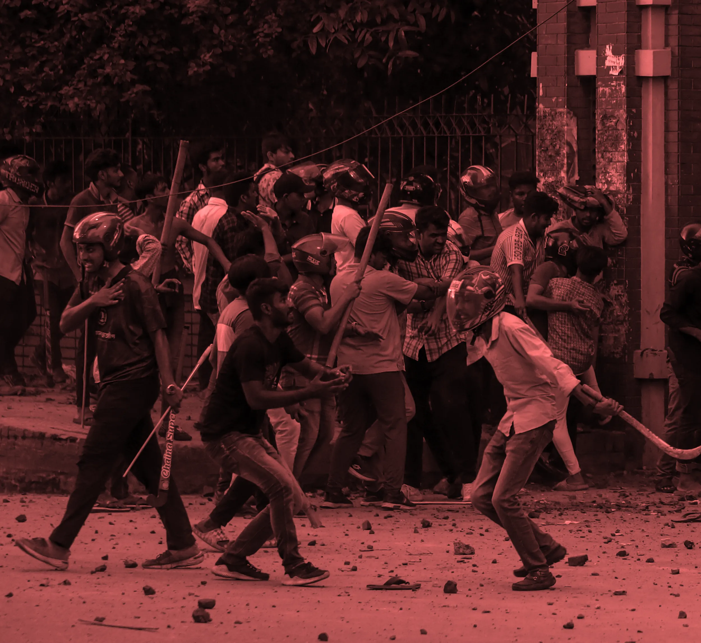
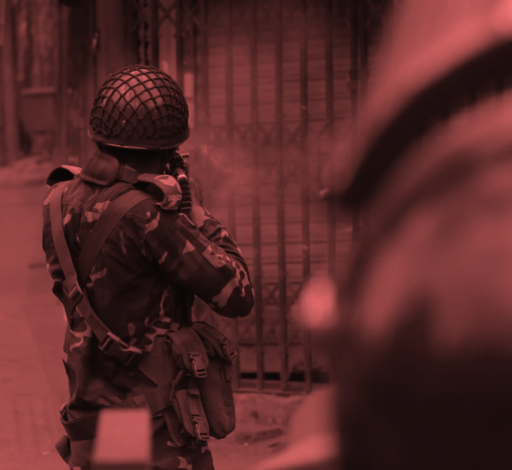

The interim government released a martyrs’ list in December last year listing 834 victims, but not
without discrepancies. Netra News reached out to the 834 families to tally details of the victims and
map out the pattern of the three-week long massacre starting on July 16th, 2024 under the Sheikh
Hasina-led Awami League ruling government.
Aaqib Md Shatil— June 13, 2026
Two burkha-clad women were frantically running through the fish market behind East West
University. “A man told us to take this route to get to Farazy hospital [in Rampura from Merul
Badda] because there’s heavy gunfire, the Rampura bridge is inaccessible,” says Selina Begum,
Selim Talukdar’s mother.
On July 18th, 2024, around the time of Zuhr Azan, Selina sprinted out of her home with her
daughter. She had just received a call from her son’s phone. “‘He has been shot,’ a stranger
informed me,” recalls Selina. Protesters, the police, armed Awami League cadres and violence
swarmed the streets.
By the time Selina reached the hospital, Selim’s body had already left. “The doctor there said
he’s in critical condition. They sent him to a government hospital,” she says.
Mugda, it must be, Selina deduced. “My daughter was first taken in to see my son. She was asked
if she’s strong,” says Selina.
Emotional restraint was a critical need, it seems. In a few moments, Selina was asked to show it.
Selina braced for impact, but nothing could have really prepared her.
Selim’s body was twitching, but he was unconscious. The spasms were involuntary, perhaps like a
fish out of water. Selim incurred 75 pellet wounds across his upper torso, including his head.
After 12 days at the ICU at a private hospital in the capital, where Selina had to sign a
statement declaring that Selim was not taking part in the student protests, her only son died.
Md Selim Talukder, who was shot multiple times by the police at close range, is among the scores
of victims of a three-week-long massacre in Bangladesh perpetrated by the then-ruling
government, the Awami League.
What started as a student protest demanding reforms to the quota-based government job recruitment
system turned into a bloody anti-government movement after the then-prime minister Sheikh Hasina
failed to quell the protests with unlawful use of force, violence and intimidation tactics.
Hasina fled to India on August 5th, 2024. An interim government succeeded her government.
Shoot first, aim later
Our analysis — verified by accounts from victims’ families and news reports — suggests that half of
the victims out of 705 did not actively participate in the protests. They were pedestrians,
onlookers, or they joined the victory march after learning of Hasina’s ousting, unaware of any
imminent attacks. Some of them were shot while returning home, some went out to buy food, some were
going to work, and some were even shot while on rooftops, balconies or inside their homes.
It appears that the security forces and Awami League cadres did not spend much time discerning
between the protesters and pedestrians or onlookers.
Human Rights Watch concluded in their report that the indiscriminate attacks on bystanders “appeared
to be part of a broader pattern.” According to the report,
police shot at onlookers observing the scene from their homes, aiming to instil fear and convey a
message that people should not watch what was happening around them.
Our findings indicate that 96.56% of the deaths caused by security forces or members of the Awami
League, or by both groups, were due to gunshots.
Timeline of Violence: Daily Death Toll Analysis
Documenting the escalation and phases of violence from July 16th to August
5th, 2024
907
Total Deaths
268
Deadliest Day August 5
21
Days of Violence
All victims who died from fatal wounds during the curfew days — from July 20th to July 22nd — were
shot, according to their families and news reports. This indicates that the forces enforcing the
curfew openly used firearms. The pattern continued on the final days of the regime, on August 4th
and August 5th.
Only a handful of victims died after being beaten or stabbed by Awami League-linked armed cadres. Two
victims died after an executive magistrate’s car rammed them in Sherpur, and two others were drowned
in Madaripur and Sylhet. The rest were gunned down.
At least 272 victims actively joined the protests, according to their families and news reports. Most
of them were young. Generation Z (individuals born between 1997 and 2012) not only led the movement
but also paid the ultimate price in droves. Our analysis shows 61.31% of the victims were from
Generation Z, followed by millennials (29.16%).
The youngest victim of the massacre was a four-year-old, and the oldest was in his seventies.
Medical ID ↑
Victim’s Name
Region
Alleged Perpetrator
< 123 … 1112 >
Killing fields
Taim and his two friends were inside a shuttered tea stall at Jatrabari. Around 12:30 pm — during a
brief recess in a nationwide curfew — the police dragged out Rahat, Taim’s friend and beat him
indiscriminately.
Taim was dragged out, too, but he met a worse fate.
“Run!” the police ordered. Taim and his friends listened. But, within a few moments, he fell. The
police shot Taim from the back.
Rahat bends over to drag Taim’s body, but the rubber bullets continue to rain. The video clip, which
eventually went viral on social media from the July-August uprising, captured Taim’s limp body and
Rahat’s struggle to move the body away from the police.
It was then that Zakir Hossain, an official attached to Jatrabari Police Station, approached with his
shotgun, targeting Taim’s chest and shot him.
Rahat, who became Zakir’s next aim and also injured, then ran. Taim’s body was left a few yards away
from the police.
Imam Hasan Taim died within the hour on July 20th, 2024, at Jatrabari.
In Dhaka, the highest number of victims died after being fatally injured in Wari, an administrative
division of Dhaka Metropolitan Police, followed by Uttara, Mirpur and Gulshan divisions. Wari
comprises the Jatrabari and Kadamtali police stations. The officials of these stations are accused
of killing at least 107 victims.
As the July massacre unfolded, Dhaka, the capital of Bangladesh, saw the highest number of deaths, at
least 479, followed by other killing fields in Gazipur, Narayanganj and Narsingdi.
Methods of Violence Analysis
Breakdown of violence methods used against victims throughout the massacre
period
Shot: 27 Stabbed: 23 Beaten: 25 Others: 35
907
Shot
907
Stabbed
907
Beaten
907
Others
Key Findings
96.5% of victims died from gunshot wounds, confirming systematic use of firearms.
During curfew period (July 20–22), 100% of victims were shot
Physical violence (stabbing, beating) peaked during initial escalation phase
During curfew period (July 20–22), 100% of victims were shot
The violence was particularly indiscriminate on July 19th, 20th, and August 5th.
According to our analysis, at least 325 victims died in the third week of July as the security forces
and the Awami League cracked down on the protesters. The attacks were intensified on July 18th, when
53 people suffered deadly injuries, and on the following day, the number rose by threefold.
On the evening of July 19th, following around a hundred deaths and at least a dozen severely injured
protesters, the Hasina regime imposed a curfew with “shoot-at-sight” orders starting at midnight on
July 20th. The number of fatal injuries from bullet wounds significantly declined in the following
days; however, they surged again on August 4th when the armed cadres of the Awami League became
particularly active following a directive from the party to its members to “gather” in every ward,
district, and city.
Numerous photographs and videos from that day captured Awami League members parading in the streets
armed with military-grade weapons, sharp machetes, and blunt objects. Notably, half of the victims
who suffered fatal injuries leading to their deaths were harmed by these Awami League members or
armed cadres backed by the party, allegedly killing 86.
Geographic Distribution of Violence
Spatial analysis of fatalities across districts and administrative zones during the July Massacre
On August 5th, at least 268 people suffered fatal injuries; some died on that day, and others
succumbed to their injuries in the following months.
July 18: ‘The Core Committee’
All of the country’s chiefs of security forces and intelligence agencies comprised this ‘core’
committee, according to the UN’s human rights office’s report on the massacre, published in February
2025. It was headed by the then Home Minister, Asaduzzaman Khan Kamal.
The committee met on July 18th for the first time and decided to engage the paramilitary force BGB,
which carries military-grade weapons used in wars. The high death toll in Wari and Narayanganj,
among other zones and districts, is linked to a strategic decision made by the then Awami League
government.
üìÖ July¬†16: The massacre begins.
üìÖ July¬†17: Violence spreads in Dhaka.
üìÖ July¬†18: Clashes intensify across districts.
üìÖ Aug¬†3: Human‑rights groups demand investigation.
üìÖ Aug¬†4: Death toll confirmed at over¬†100.
üìÖ Aug¬†5: Government announces inquiry commission.
Kamal ordered the security forces to clear the thousands of protesters who were blocking the
Dhaka-Chattogram highway (N1), the country’s economic lifeline, according to the OHCHR report.
Wari’s Jatrabari area is the gateway to the Dhaka-Chattogram highway, which passes through
Narayanganj’s Chittagong Road.
Police and security forces became increasingly desperate to remove the protesters from the two areas
that sit on the highway. From July 19th to July 22nd, at least 72 individuals suffered fatal
injuries in these areas.
According to our analysis, all but one of the victims who were shot in Narayanganj were shot in areas
adjacent to the highway. However, the actual numbers may be higher.
Netra News obtained photographs of senior police officials visiting Jatrabari on July 22nd after the
‘successful’ clearing operation. At least three of these officials — IGP Chowdhury Abdullah
Al-Mamun, RAB DG Harun Ar Rashid, and Special Branch Chief Monirul Islam — joined the Core Committee
meeting with the then Home Minister Asaduzzaman Khan Kamal on July 18th.
The following is the list of individuals who made up this committee: Former chief of police Chowdhury
Abdullah Al-Mamun; the BGB Director General, Major General A. K. M. Nazmul Hasan; the head of the
RAB, Harun-Ar-Rashid (under United States sanctions); Major General A. K. M. Aminul Haque, Director
General of Ansar and the Village Defence Party; the head of the DGFI, Major General Hamidul Haque;
the chief of the National Security Intelligence (NSI), Major General Hossain Al Morshed; Monirul
Islam, chief of the police’s Special Branch; and Ziaul Ahsan, the head of the NTMC.
The UN report also claims that a general from the Bangladesh Army joined the committee from July
20th, shortly after the imposition of a nationwide curfew.
July 19: Enter BNP and Jamaat activists
In the state-sponsored massacre, 12.22% of the victims were members or activists of the BNP,
according to their families and news reports, while 2.13% were from Jamaat. However, both parties
claim higher figures.
Netra News asked the family members of the victims and reviewed the news reports to ascertain whether
the victims were involved with any political party. Our findings indicate that 88 victims were
leaders or activists of the BNP or its affiliated organisations, while 15 victims were associated
with Jamaat or its affiliated groups.
However, it is likely that many family members of the victims may not be aware of their political
affiliations, as they lived far away from them; hence, the number is not accurate and might not
capture the full extent of the parties’ loss during the protests.
Even so, it provides a crucial pattern.
Our analysis shows that, though a member of BNP’s student wing, Chhatra Dal, died on July 16th, the
party started losing its activists in large numbers from July 19th. It lost 25 of its activists and
leaders on the streets on that day, with two deaths on July 20th and three on July 21st, suggesting
that the party got involved with the movement on July 19th.
BNP was heavily active on August 4th, and almost one-fifth of the victims of the day were party
leaders or activists. On the following day, the party lost 34 of its men.
Jamaat lost three activists on July 19th, the highest in July, and ten on August 5th. At least one
member of Gana Sanghati Andolan, Gono Odhikar Parishad and Islami Andolan Bangladesh died, too,
during the protests.
However, not everyone on the martyrs’ list belonging to these parties was active in the protest. Some
of them died while crossing the road or returning from work, according to our analysis based on
testimonies of family members and news reports.
Who were the perpetrators
Most of the victims died allegedly at the hands of the police, followed by the armed cadres of the
Awami League.
Our tally — verified by victims’ families, witnesses and news reports — indicates that police
inflicted deadly injuries on at least 467 victims. The police were most brutal on July 19th and
August 5th. In 61 cases, police worked with the BGB to shoot at the protesters, and given the
complex nature of the situation, it has been extremely difficult for the witnesses and journalists
to ascertain whose shots took the lives of the victims.
It is also likely that the witnesses might have used police interchangeably to describe the members
of the security forces in some cases.
According to our analysis, at least 43 victims died as a result of coordinated attacks by the Awami
League and the police, and 27 more died at the hands of the BGB. In two instances, witnesses
reported that the army shot the victims. On August 4th, during a protest in Sherpur, a government
official's car struck and killed at least two protesters.
467POLICE
86AWAMI LEAGUE
63POLICE-BGB
43POLICE-AL
27BGB
19OTHERS
Methodology and notes of discrepancies
To comply with the official definition of martyrs, according to the “July Mass Uprising Martyrs’
Families and Injured Students-Citizens Welfare and Rehabilitation Ordinance, 2025”, issued on June
17th, 2025, in this analysis, we have considered only the victims who lost their lives in
state-backed excesses by security forces and Awami League men. However, the list released by the
government does not fully comply with its own ‘martyr’ criteria.
Netra News collected the list of victims from the gazette that mentioned 834 names, and reached out
to the families to collect the location where the victims were injured, the cause of their deaths,
the alleged perpetrators, their age and political affiliation. We verified the information from at
least two news articles published in national and, in some cases, local newspapers.
Of 834 victims’ families, 666 responded to our call. The remaining families either did not respond to
our call, despite repeated attempts, or their numbers were found to be switched off. Five families
of victims responded to our call but refused to share any information.
After collecting the information from the families, we looked for the victims’ names in the
newspapers published during and after the massacre. We have found necessary and relevant information
in several national and local dailies confirming 748 victims who suffered fatal injuries from July
16th to August 5th and consequently died.
We have collected information about the victims whose family members could not be reached from at
least two news reports. We also spoke with the protest mobilisers and witnesses from different areas
to confirm the details of the clashes that led to their deaths.
Among these victims, 705 lost their lives due to the excesses of the security forces and members of
the Awami League.
The rest of the victims (748-703=45) whose information was verified but not included in the analysis,
died due to various reasons after Sheikh Hasina fled. The majority of them (44) were burnt in houses
or hotels owned by Awami League leaders, and at least one of them was electrocuted.
Regarding the remaining victims — 86 in total — Netra News was unable to gather sufficient
information for analysis. This was primarily because their deaths were not adequately reported in
major newspapers, and family members did not respond to our repeated calls. Additionally, in some of
the cases, the surrounding circumstances of their deaths did not meet the criteria for being
classified as massacre victims, or “martyrs.”
For example, we have found the names of police officials in the list as well, who were killed,
according to their families and news reports, by protesters. We have found at least one victim in
the list who was mistaken as Awami League and was killed by protesters, despite joining the
protests.
Through news articles and interviews, we identified that six individuals on the list died of natural
causes. Two others passed away due to injuries sustained on August 6th; one of them was killed while
attempting to escape from prison.
Furthermore, four individuals listed were police officials.
On July 1st, 2025, the interim government added 10 more names to the list of 834 martyrs.
However, Netra News was unable to reach the families after repeated calls.
Reporting and data analysis by Aaqib Md Shatil; editing by Nusmila Lohani; and design by Subinoy Mustofi Eron.